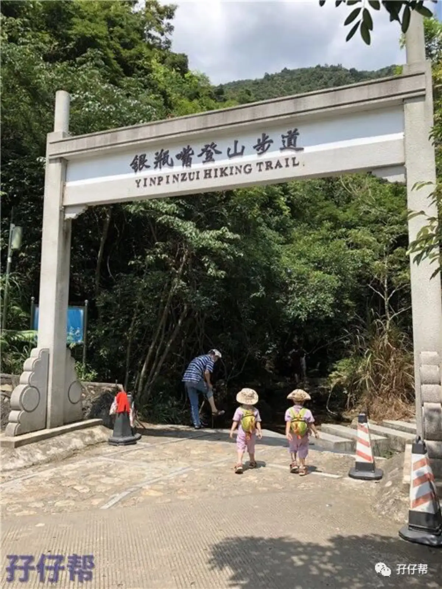
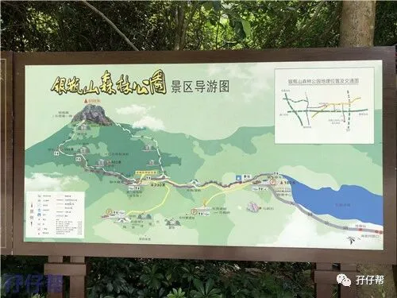
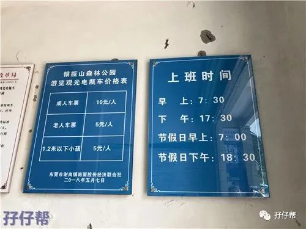
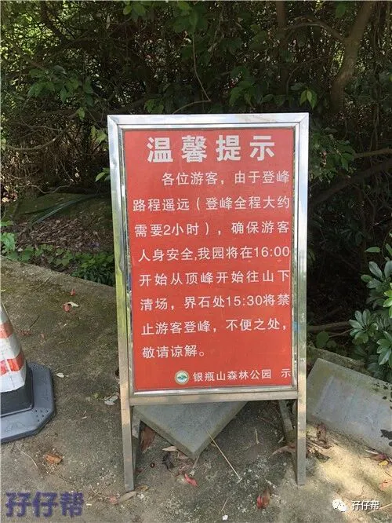
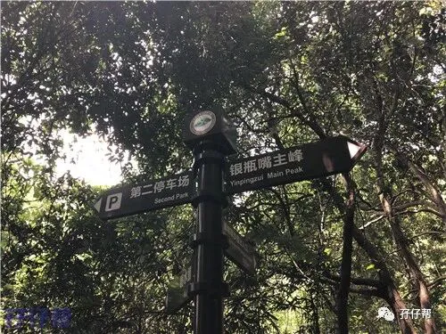
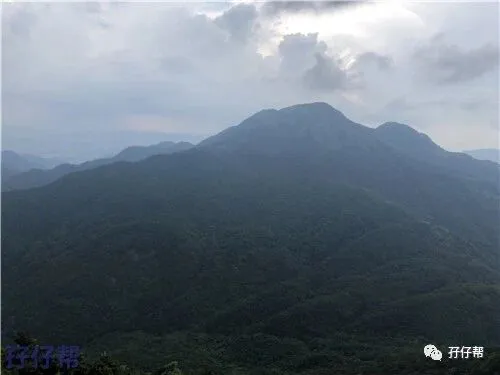
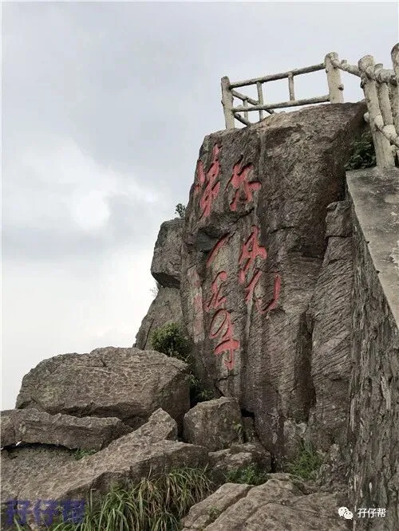
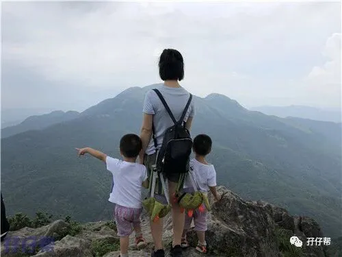

背景：圆圆&圈圈3岁18天
地点：东莞银瓶山
人物：圆圆&圈圈，圆圈爸，圆圈妈
回圆圈外婆家的时候，都会经过银瓶山隧道，每次经过的时候，圆圈就异常激动开始倒数：“妈妈，车要进隧道啦！1,2,3咻…进隧道啦！”
这次终于逮到机会去见识下这个银瓶山，东莞的最高峰。
先来科普下东莞银瓶山：
银瓶山森林公园是东莞面积最大的森林公园，主峰银瓶嘴海拔898米，为“东莞第一峰”。银瓶山森林公园划分为谢岗、清溪和樟木头三大片区，是国家4A级旅游风景区。
我们此次前往的目的地是东莞银瓶山谢岗景区，先上一张银屏山森林公园谢岗景区导游图.
1
1
1
因为该景点地处偏远，交通设施不完善，没有公交车直达，比较适合自驾游。
而经历上次爬深圳梧桐山，因“穷养男孩子”的错误做法导致的各种狼狈，此次决定自驾车前往。
11点20分出发，12点10分就到了检查站，很多车正在排队进入停车场，因为景区控制人流，私家车都被卡在检查站，等候放行。
我们在检查站走走停停，耗了整整1个小时。此时还不算是旅游旺季。
1点30分我们终于被放行，经过两三公里的入园公路，进入到景区的停车场。
温馨提示：
等不起的老司机可能会在此时想弃车徒步走进去。
且慢!
检查站距离景区入口还有两三公里路，除非你是存心要全程走上去的，不然还是乖乖地在车上等着被放行吧！
1
2
1
进入停车场一律收费3元。是的，你没听错！停车费3元！可以停一整天！
这简直是我见过的景区内最便宜的停车费，没有之一！
景区门票免费，有观光电瓶车，成人10元一张。
考虑到我们已经在检查点浪费了一个小时，且现在时间已经是下午两点钟了，我们决定坐电瓶车直达登山道。
游客不是很多，我们买到票之后直接就可以上车了！观光车会经过第二停车场，终点站是银瓶嘴登山步道。
温馨提示：
景区门口有小卖部可以补给干粮和饮用水，虽然价格不厚道，但总比山上的10元一瓶矿泉水来得实在。
1
3
1
下午2点整，我们终于到达银瓶嘴的登山步道入口，开始爬山啦！
登山步道的入口就是碧水叠潭，有很多家长带着孩子在小溪流嬉戏。因为圆圈兄弟怕水，且我们的主要目标是山顶----东莞第一峰，因此没有停留太久，直接往山顶方向走。
沿途都是石梯小路，有树荫，不会很晒，即使是现在三伏天，依然非常凉快。我们带的帽子和太阳镜都用不上。
空气非常好，满满的负氧离子气息扑面而来，远处都是郁郁葱葱的群山大树，俨然进入一片绿色的海洋！
景区配套设施基本齐全，每到一个岔路口都有指示牌标示，隔一段路就有凉亭可供休息，边上也有小石凳可坐可躺，半山腰还配置了两处洗手间。
但景区环境卫生有待提高，随处可见丢弃的纸屑垃圾。
在此呼吁大家文明旅行！
我趁机指着地上的垃圾对圆圈说教：“你们看，这么美丽的风景，地上那么多垃圾，都不好看了，对吗？”
圆圈哥俩纷纷附和，居然伸手想把垃圾捡起来，放垃圾桶。
不得不说，圆圈在卫生文明意识方面还是及格的哈！
温馨提示
喜欢溯溪路线的游客可以选择五道将军亲水步道，沿途可以看到小溪流。
时间充裕的情况下，可以带孩子去小溪边戏水捞鱼。但是要注意安全哦！
1
4
1
圆圆爬到半山腰就嚷嚷着要下山回家了，此时零食已经不起作用了。不管我如何巧舌如簧，坑蒙拐骗都无济于事了。
在石凳休息的时候，遇到一家三口，那小女孩比圆圈小一个月，非常精灵可爱，拿着零食分享给圆圈兄弟吃。圆圈兄弟可能没见过那么豪爽的小女汉子一步步退缩到我身上，不敢接过零食。
在继续上山的路上，圆圆数次回眸等候那小女孩追上来。
我可看出来了，趁机告诉他:"如果不跑快点，小心被妹妹追上了当火车头哦。"
这一招真的太狠了。
圆圆为了不让妹妹看不起，像打鸡血似的往上爬，直到发现把妹妹甩得远远的才停下来懊悔：“妈妈，我把妹妹弄丢了！”
原来“男女搭配干活不累”用在小男孩的身上也能发生物理反应哦！
1
5
1
爬到三分之二的路程的时候，突然变天了，电闪雷鸣，山顶那边已经乌云密布了。
陆续看到很多人从山顶下来了，有些人甚至往回走，不打算往上爬了。
圆圈爸也有点要退缩的意思，尤其是得到好心人的提示，前方还有一个小时的路程才能到山顶。
我看了下天气，山顶另一边晴空一片，只是几个闷雷而已，且一时半会儿应该不会下雨，即使下雨也是小雨点。
虽然今天我的状态也不是很好，但是已经爬到三分之二了，如果就这样下山太没意思了。
最主要我不想让圆圈误以为他们的爸爸妈妈是个遇到困难就退缩，遇到事情就放弃的人。
我不希望圆圈长大之后稍微遇到点破事就以各种冠冕堂皇的理由打退堂鼓，半途而废！
而且，圆圈反而因为打雷声由刚刚的昏昏欲睡变得兴致盎然了。
思及此！哪怕前方已经倾盆大雨，我也要带着圆圈继续上！
1
6
1
事实证明，除了偶尔几声雷鸣并未见下雨，经过约两个半小时的攀登，发现前方明亮了很多，周边只有光秃秃的草丛，我知道，这是快要到山顶了。
圆圈似乎被眼前的豁然开朗刺激到了，马上精神抖擞，一个箭步往前冲。
山顶的风景实在美极了，视野很开阔，可看到不远处我们经过的高速公路以及马路上来来往往的车辆.
圆圈说：“妈妈，快看，好像家里的汽车玩具！”
登顶后可看到对面更高的山，据说是惠州的白云嶂，尚处于开发状态。我有点心猿意马了，要不改天去会一会神秘的白云嶂。哈哈！
山上没有石凳可供休息，我们只好席地而坐，把干粮全消灭掉了。不巧，真的下雨了。
还没来得及问路，就匆忙往原路下山了。
因为观光电瓶车6点钟就停运了，此时5点钟，若要赶上最后一班车，我们只有一个小时的下山时间。
好在下山的时候，圆圈状态很好，几乎是一路跑着跳着下山的，因为下雨天路滑，圆圈爸把心一横，负重抱着两个30多斤重的圆圈走了好几段陡峭的小路。
在此，给双胞胎宝爸点赞！
非常幸运，我们赶上了最后一趟电瓶车！
温馨提示：
其实后面看地图，是可以往山顶另一边下山的，据说路况比较陡峭，但距离山下较近，可直达第二停车场。
1
7
1
圆圈妈的经验分享
量力而行
银瓶山可游玩的路线较多，带着孩子全部走一遍怕是不可能了，最好根据实际情况确定主线，量力而行，其他景点没有时间就不去了，免得孩子吃不消。
比如小孩子喜欢玩水，家长可以带孩子走五道将军亲水步道，爬山戏水两不误。
装备要充足
带孩子出门，除了手机钱包，零食必不可少，且通过多次实践证明真的很重要。
不得不承认，当孩子耍赖走不动，哭着要抱的时候，零食的突然出现，大多数问题就迎刃而解了。
圆圈这次爬山的状态不是很好。走走停停，老是嚷嚷着要吃，才走四分之一路，已经停下来吃了四种零食。幸好在零食的诱惑下，还是愿意继续往前走！
山顶山风很大，给孩子多带几件衣服，汗湿的衣服记得换掉，最好披上长袖小外套。
绝不打退堂鼓
带圆圈爬过大大小小的山，总结一个原则，在孩子面前绝不可表露出退缩放弃的念头。
我不希望有朝一日这个喜欢打退堂鼓的恶习被圆圈 “学以致用”了，并成为将来圆圈跟我和圆圈顶嘴用的反面教材。
即使面对随时都会电闪雷鸣，倾盆大雨的恶劣天气，我也不能就此打道回府。
我要用行动告诉圆圈：他们的妈妈不喜欢半途而废！也希望将来作为男子汉的他们也是个做事情有始有终的人！
站得高，望得远！
恐怕这就是圆圈妈热爱大自然热爱爬山的理由吧！
希望圆圈每次登顶都有不同的体验和感受，甚至爱上这种一览众山小的感觉，让他们胸襟更宽广，心胸更开阔！
虽然他们还不会表达，但是看到他们登高眺望，俯瞰远处时双眼发光发亮的样子以及发出情不自禁的赞叹。
我知道我成功了！
1
8
1
圆圈妈寄语
我实际不是个出色的模范妈妈，甚至很懒。对于养育男孩，尤其是养育一对双胞胎男孩，我经常犯迷糊，没有概念。
但是说到带孩子出去玩，我马上满腔热血沸腾。
我们在山顶留影的时候，被两大叔驻足观看，啧啧称赞，
---“瞧这小哥俩居然爬上山了，不简单啊！”
---“人家那是从小训练出来的！”
为娘心理表示非常骄傲！
圆圈兄弟确实在我和圆圈爸的引导下，渐渐地喜欢上爬山，喜欢上登高望远唯我独尊的感觉！
本文转载自孖仔帮，专注双胞胎育儿经验分享，著作权归孖仔帮所有。
END







